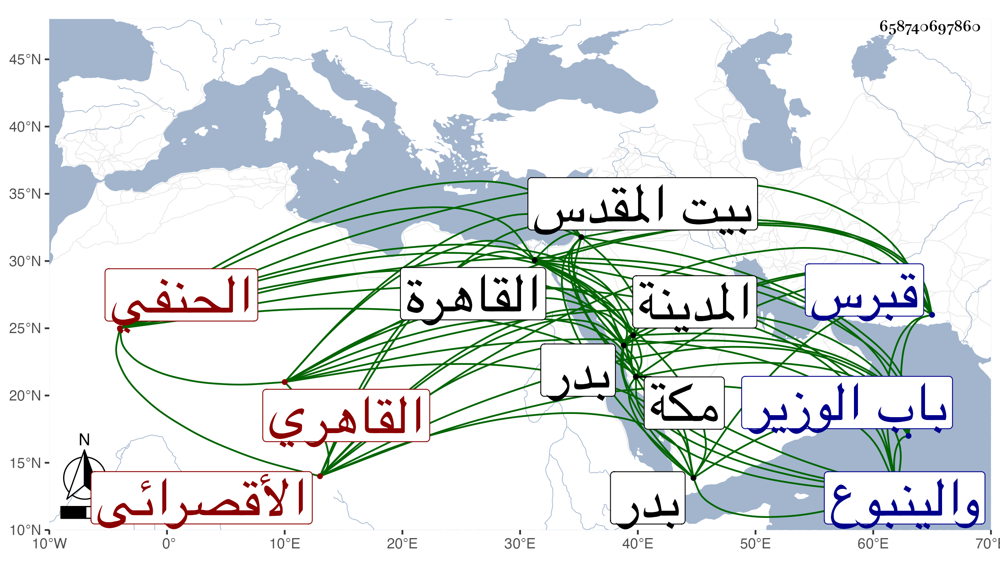

0902Sakhawi.DawLamic.ITO20230111-ara1.EIS1600.658740697860
Biography ID: 658740697860
357
أبو السعود بن الأمين يحيى بن محمد بن إبرهيم الأقصرائي الأصل القاهري الحنفي شقيق زينب الآتية أمهما أمة فرنجية من سبي قبرس واسمه البدر محمد . ولد في سنة ست وثلاثين وثمانمائة بمنزل أبيه بالقرب من باب الوزير ونشأ في كنف أبيه فحفظ القرآن وغيره ولازمه في الفقه والعربية والأصلين والمعاني والبيان والحديث والتفسير وغيرها وسمع عليه كثيرا وبعض ذلك كالشفا بقراءته وكذا أخذ عن ابن عمته المحب الأقصرائي بل قرأ بالمدينة النبوية على أعجمي كان بخانقاه سرياقوس النحو والصرف وعلى الشمس الفيومي الأزهري المنطق في آخرين وسمع على الزين الزركشي وابن ناظر الصاحبة وابن بردس وابن الطحان وغيرهم وأجاز له ولأخته خلق منهم باستدعاء بخط النجم بن فهد مؤرخ برمضان سنة سبع وثلاثين شيخنا والشمس بن الجندي والعز بن الفرات والجمال عبد الله ابن جماعة وأخته سارة والجمال عبد الله الهيثمي والنور الشلقامي والشرف يونس الواحي والشمس البالسي وناصر الدين الفاقوسي والتاج الشرابيشي في آخرين باستدعائه واستدعاء الزين رضوان وحج غير مرة منها في سنة أربع وستين مع جانبك الجداوي وجاور بقيتها ثم بعد ذلك مع أبيه وزار بيت المقدس ورغب له أبوه عن مشيخة الأشرفية وتدريسها وباشرهما في حياته وكذا درس في غيرها وكان مائلا إلى الخيول النفيسة مع ذكائه ومشاركته وتودده ومزيد إقبال أبيه عليه . مات وهو راجع مع أبيه من مكة وكان ابتدأ به الضعف فيها في سابع ذي الحجة بحيث صعد وهو متوعك واستمر في ازدياد حتى كانت وفاته بين بدر والينبوع في يوم السبت ثاني عشريه سنة تسع وسبعين وكان أجحف في دفع ما كان صحبته من صرر أهل الحرمين مع مزيد خدمتهم له بحيث قيل أنهم أكثروا الالتجاء إلى الله في أمره واستمروا سائرين به في المحفة مرحلتين حتى دفن بالينبوع بعد تغيره تغيرا فاحشا ثم بعد مدة أحضر إلى القاهرة فدفن عند أبيه وما حمد أحد هذا الصنيع وعد موته في حياة والده كرامة له وأن عظم توجعه واشتد جزعه لفقده عوضه الله الجنة ورحمه وإيانا وعفا عنه .
